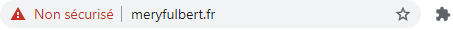

02- Protocole TLS avec OpenSSL
Mise en place d'un serveur web sécurisé (https) avec le Protocole SSL / TLS avec OpenSSL
Introduction
Dans ce TP, vous allez configurer notre serveur Apache sur et activer l'extension mod_SSL permettant de sécuriser les communications avec le protocole Secure Socket Layer dont l'évolution a donné naissance au protocole TLS (Transport Layer Security).
SSL signifie « Secure Socket Layer » et TLS « Transport Layer Security ». Les deux sont des protocoles de chiffrement pour permettre aux requêtes et réponses de circuler de manière confidentielle sur la couche de transport d'Internet. Ils agissent donc au niveau au-dessus de la couche 4 du modèle OSI. Leur tâche est de procéder au chiffrement (aussi appelé cryptage) des flux de données entre un client et un serveur.
Dans le modèle théorique OSI on peut les imaginer fonctionnant sur la couche 6 : Présentation. A charge pour les développeurs des protocoles applicatifs classiques de gérer l'implémentation de la couche de sécurité associée en respectant le protocole TLS.
Lorsque la communication est effectuée via cette couche de transport chiffrée, un « s » est ajouté au nom du protocole : http devient https, imap devient imaps, etc. On rencontre également l'abréviation SSL lorsqu'on parle de certificat SSL. Ce certificat est nécessaire pour transférer la clé publique du serveur ainsi que son identité afin d'initier une communication via TLS. Ces certificats sont indispensables à la sécurité sur internet. Ils permettent l'authentification des machines qui contrairement aux humains ne peuvent s'authentifier avec des logins/password.
Les certificats sont émis et signés numériquement par des tiers de confiance : L'autorité de certification que l'on peut assimiler à un notaire lors d'une transaction immobilière. Il est garant de la vérification de l'identité des vendeurs (mais aussi des acheteurs).
Un protocole sécurisé fonctionne sur un port différent de son homologue non sécurisé.
| Nom | Port | Nom | Port |
|---|---|---|---|
| http | 80 | https | 443 |
| ftp | 21 | ftps | 990 |
| imap | 143 | imaps | 993 |
| smtp | 25 | smtps | 465 (obsolète), 587 |
| pop | 110 | pops | 995 |
Différence entre SSL et TLS
Le SSL a été introduit en 1995. Après la découverte d'une série de lourdes failles de sécurité, la version 2.0 améliorée a ensuite vu le jour puis la version 3.0 l'année suivante. Plus tard, l'IETF (l'Internet Engineering Task Force, chargée du développement d'Internet) a rejeté SSL 3.0 après la découverte de nouvelles failles de sécurité.
TLS est le protocole succédant à SSL. Il a été introduit en 1999 en tant que version améliorée de SSL 3.0 et fut tout d'abord baptisé SSL 3.1. La version actuelle est TLS 1.3 (depuis 2018).
Dans un premier temps, l'écart entre SSL 3.0 et TLS 1.0 était mince. « Les différences entre ce protocole (TLS) et SSL 3.0 ne sont pas fondamentales, mais sont suffisamment importantes pour que TLS 1.0 et SSL 3.0 ne puissent pas fonctionner ensemble » (traduit librement de la requête RFC 2246). Par rapport à SSL 3.0, TLS 1.0 a amélioré la sécurité cryptographique et l'interopérabilité des applications. La version TLS 1.2 utilisée actuellement apporte une sécurité accrue contre les attaques des hackers et permet aux applications une flexibilité nettement plus grande en ce qui concerne la gestion des algorithmes de chiffrement utilisés (cipher suites ou suite cryptographiques).
Par conséquent, le TLS actuel est plus sûr, plus flexible et plus efficace que l'ancien SSL. Toutefois, comme l'abréviation « SSL » est aujourd'hui nettement plus connue que « TLS », de nombreux fournisseurs de logiciels utilisent le terme SSL ou le double terme SSL/TLS alors qu'ils entendent généralement la version actuelle de TLS, à savoir TLS 1.3.
Recommandations officielles de la CNIL
Tout site web doit garantir son identité et la confidentialité des informations transmises.
Les précautions élémentaires
-
Mettre en œuvre le protocole TLS (en remplacement de SSL) sur tous les sites web, en utilisant uniquement les versions les plus récentes et en vérifiant sa bonne mise en œuvre.
-
Rendre l'utilisation de TLS obligatoire pour toutes les pages d'authentification, de formulaire ou sur lesquelles sont affichées ou transmises des données à caractère personnel non publiques.
-
Limiter les ports de communication strictement nécessaires au bon fonctionnement des applications installées. Si l'accès à un serveur web passe uniquement par HTTPS, il faut autoriser uniquement les flux réseau IP entrants sur cette machine sur le port 443 et bloquer tous les autres ports. (Règle de filtrage dans le pare feu)
-
Limiter l'accès aux outils et interfaces d'administration aux seules personnes habilitées. En particulier, limiter l'utilisation des comptes administrateurs aux équipes en charge de l'informatique et ce, uniquement pour les actions d'administration qui le nécessitent.
-
Si des cookies non nécessaires au service sont utilisés, recueillir le consentement de l'internaute après information de celui-ci et avant le dépôt du cookie.
-
Limiter le nombre de composants mis en œuvre, en effectuer une veille et les mettre à jour.
Ce qu'il ne faut pas faire
-
Faire transiter des données à caractère personnel dans une URL telles que identifiants ou mots de passe.
-
Utiliser des services non sécurisés (authentification en clair, flux en clair, etc.).
-
Utiliser les serveurs comme des postes de travail, notamment pour naviguer sur des sites web, accéder à la messagerie électronique, etc.
-
Placer les bases de données sur un serveur directement accessible depuis Internet.
-
Utiliser des comptes utilisateurs génériques (c'est-à-dire partagés entre plusieurs utilisateurs).
https://www.cnil.fr/fr/securite-securiser-les-sites-web
Voilà un bon résumé de l'intérêt du cours Cybersécurité du BTS SIO
OpenSSL ou Let's Encrypt
Let\'s Encrypt (abrégé LE) est une autorité de certification lancée le 3 décembre 2015 (Bêta Version Publique). Cette autorité fournit des certificats gratuits X.509 pour le protocole cryptographique TLS au moyen d\'un processus automatisé destiné à se passer du processus complexe actuel impliquant la création manuelle, la validation, la signature, l\'installation et le renouvellement des certificats pour la sécurisation des sites internet. En décembre 2019, Let\'s encrypt fournit 54,67 % des certificats TLS.
Le projet vise à généraliser l\'usage de connexions sécurisées sur l'internet. En supprimant la nécessité de paiement, de la configuration du serveur web, des courriels de validation et de gestion de l\'expiration des certificats, le projet est fait pour réduire de manière significative la complexité de la mise en place et de la maintenance du chiffrement TLS. Sur un serveur GNU/Linux, l'exécution de seulement deux commandes est censée être suffisante pour paramétrer le chiffrement HTTPS, l'acquisition et l'installation de certificats, et ceci en quelques dizaines de secondes. C'est ce que propose OVH même sur son offre LowCoast.
Let's Encrypt est LA solution à moindre coût, toutefois, comme tous les certificats, son utilisation repose sur l'achat d'un nom de domaine (que nous n'avons pas). De plus Let's Encrypt automatise le processus (workflow) entre le client (propriétaire d'un nom de domaine) et le prestataire (autorité de certification) tier de confiance. Il est indispensable de bien comprendre les rôles et différentes étapes de ce processus pour comprendre le fonctionnement de la sécurisation d'un site web. C'est pourquoi nous utiliserons le logiciel Openssl pour réaliser nos propres certificats et nous faire passer pour une autorité de certification.
Par ailleurs, la gratuité de Let's encrypt a permis aux cybercriminels de monter des serveurs sécurisés ce qui empêche la détection des logiciels malveillants (ils sont chiffrés). Ils ont aussi profité de l'aubaine pour monter des campagnes de typo-squatting (achat de noms de domaine dont le nom est très proche de la victime ciblée) leur permettant de monter des copies de sites légitimes avec de véritables certificats reconnus comme de confiance par les navigateurs. Cela rend les attaques de phishing plus performantes.
Le fameux cadenas vert du navigateur a d'ailleurs disparu pour cette raison, le cadenas n'est pas le signe que l'on peut faire confiance au serveur, il indique juste que la communication est chiffrée et qu'un certificat a bien été émis pour le nom de domaine utilisé. Cela ne signifie pas que le propriétaire de ce nom de domaine est un acteur de confiance. Il faut donc toujours rester vigilant par rapport aux URL quel que soit la manière d'y accéder.
Installation d'OpenSSL
OpenSSL est un ensemble de bibliothèques et d'outils comprenant tout ce qui est nécessaire à l'utilisation de la cryptographie forte et des protocoles SSL (Secure Sockets Layer), TLS (Transport Layer Security)
Il se découpe donc en trois parties :
-
la bibliothèque cryptographique
-
la bibliothèque implémentant SSL/TLS
-
le programme en ligne de commande permettant, entre autres, de manipuler les certificats et de mettre en place un serveur d'authentification ou une autorité de certification (CA)
Nous allons supposer que nous sommes notre propre autorité de certification. Cependant en pratique pour le commerce électronique il est préférable de demander un certificat à une autorité reconnue (VeriSign, etc). De fait, en étant nous-même autorité de certification nous risquons de ne pas avoir beaucoup de client, puisque nous ne sommes pas reconnus comme autorité de certification racine dans les navigateurs. Pour le devenir (installation de notre certificat racine) il faut que le client nous fasse confiance (en général juste pour une session).
A noter : openssl est aussi utilisable sous windows sans aucun problème puisque le projet a été développé en C. Il suffit juste de télécharger une version compilée pour windows 64 bits ou de le compiler soit même comme un grand.
Pour installer openssl, rien de plus simple avec les gestionnaires de
paquet, mais il est probable qu'il soit déjà installé. apt-get install openssl
PS : à vous de savoir quand il faut préfixer une commande par sudo désormais.
- Taper openssl version pour vérifier
A noter : Nous ne disposons pas de la toute dernière version (1.1.1i de décembre 2020) mais cela suffira pour notre TP.
Information très importante
Vérification du nom de l’objet
La RFC 2818, publiée en mai 2000, déconseille l’utilisation du champ Common Name (CN) dans les certificats TLS pour la vérification du nom de l’objet. Les certificats TLS sans la section SAN (Subject Alternative Name) ne peuvent plus être utilisés à des fins de vérification. Les clients qui utilisent déjà TLS, mais qui n’utilisent pas de SAN, doivent mettre à jour leurs certificats pour se conformer aux nouvelles exigences. Plus important encore, les clients doivent ajouter les DNS et/ou les adresses IP externes au champ SAN (Subject Alternative Names) du certificat.
Les navigateurs récents implémentent cette RFC et les certificats sans champ SAN ne sont plus validés.
OpenSSL ne gere malheuresement pas par défaut ce champ. Voici la solution:
Configuration openSSL (gestion RFC 2818)
Editer le fichier /etc/ssl/openssl.cnf . Ce fichier décrit le comportemant que gère openSSL. C'est dans ce fichier que nous imposerons les champs SAN (Subject Alternative Names).
Information très importante
Malheuresement, ces champs ne peuvent être renseignées par l'utilisateur de manière interactive. Il faudra donc penser à faire cette manipulation pour chaque site que pour lesquel vous souhaitez générer un certificat.
[ req ]
distinguished_name = req_distinguished_name
req_extensions = v3_req #Decommenter cette ligne et trouver la section
...
[ v3_req ]
# Extensions to add to a certificate request
basicConstraints = CA:FALSE
keyUsage = nonRepudiation, digitalSignature, keyEncipherment
######### Ajouter la ligne suivante:
subjectAltName = @alt_names # le @alt_names est un pointeur vers la section ci dessous
[ alt_names ]
DNS.1 = example.com #Saisir le nom du domaine concerné (vous remarquez qu'il n'y a pas l'hôte associé)
DNS.2 = www.example.com #saisir le nom FQDN de votre site
N'oubliez pas d'enregistrer votre fichier
- Créer un dossier de travail ( tpssl par exemple) dans la VM avec l'arborescence suivante afin de s'organiser un minimum. Vérifiez avec la commande tree à installer si vous ne l'avez pas déjà fait :
├── autorite
│ ├── certificats
│ └── keys
└── siteweb
│ ├── certificats
│ └── keys
└── requests_certificats
Création de la demande de certificat par le propriétaire du site
Pour l'algorithme RSA (factorisation de deux grands nombre premiers), L'ANSSI recommande d'utiliser des clés RSA de 2048 bits jusqu'en 2030. Au-delà il faudra passer à des clés d'une taille de 3072 bits ou changer d'algorithme en choisissant les courbes elliptiques par exemple. Ne me demandez pas de détail, c'est de l'expertise mathématique très avancée.
Source : https://www.keylength.com/fr/5/

Génération de la clé privée du serveur web
- Vérifier le contenu du fichier généré avec la commande
catpour les clés RSA ou pour les courbes eliptique
Génération d'une demande de certificat pour le serveur web.
La demande de certificat est généré avec openssl via la commande suivante :
Information très importante
Normallement les modifications dans le fichier de conf d'open SSL sont prise en compte mais on peut forcer leur utilisation
Le système va vous demander de saisir des champs ; remplissez-les en adaptant sauf le champ Common Name qui doit correspondre exactement au nom de domaine utilisé correspondant à la directive Server Name défini dans le VHost d'apache. (ex : www.lyceefulbert.fr Attention : ce domaine existe réellement, en choisir un autre obligatoirement)
Ce n'est pas la peine de saisir d'autres "extra attributes"...
Ce qui permet de générer votre CSR certificat. Celle-ci est créée dans le format PEM encodé en base64, PEM (Privacy Enhanced Mail) étant le format par défaut pour OpenSSL (il s'agit d'un fichier DER encodé en ASCII et entouré de balises de marquage).
Deux choix s'offrent désormais à nous :
-
envoyer le fichier demande.csr à un organisme (le tiers de confiance ou l\'autorité de certification (CA)) et ainsi obtenir le certificat dûment signé par la clé privée de l'organisme (après avoir payé),
-
ou bien signer nous-même notre certificat avec une autorité que nous allons créer pour l'occasion. Elle ne sera évidement pas reconnu comme étant de confiance. Cela ne peut donc pas être mis en production dans le monde réel.
C'est ce dernier choix que nous allons voir.
- Vérifions tout de même notre demande avant de la traiter :
Important
Verifier la présence des champs Subject Alternatives Names

Création du certificat de l'autorité de certification
Pour signer un certificat, vous devez devenir votre propre autorité de certification, cela implique donc de posséder une clé privée et un certificat auto-signé.
- La création de la clé privée de l\'autorité de certification se fait comme précédemment :
Attention ne pas mélanger le fichier correspondant à notre serveur et ceux correspondant à l\'autorité de certification.
l\'option -des3 introduit l\'usage d\'une \"passphrase\" qui sera demandée à chaque utilisation de la clé privée. Ne l'oubliez surtout pas. Noter le ici : _______________________
- Ensuite, à partir de la clé privée, on crée un certificat x509 pour une durée de validité d\'un an auto-signé :
Attention
Attention il faut mettre les bons chemins des différents fichiers !!!! Utilisez la tabulation pour éviter les erreurs de saisie.
Soyez imaginatif dans la saisie des informations concernant l'autorité. Elles doivent être différentes des informations saisies précédemment pour le site web. Ici vous générez votre propre autorité de certification qui est fictive.
- Quel passphrase est attendu ? Pourquoi ?
Traitement de la demande de certificat de notre serveur par l'autorité de certification fictive
- Taper openssl x509 -help pour obtenir l'aide :
La demande de certificat à signer est le fichier ________________________________
- La commande qui signe la demande de certificat est la suivante :
Important
Noter bien -extfile openssl.cnf -extensions v3_req a la fin de la demande de signature qui impose donc l'usage des options gérant les champs SAN. Il faut evidement le bon chemin. On peut imaginer un fichier de conf d'openssl par siteweb souhaité. A vous de vous adapter.
Le certificat signé par l'autorité de certification est le fichier ___________________________.
- Vérifier sa présence dans le système de fichier.
├── autorite
│ ├── certificats
│ └── keys
└── siteweb
├── certificats
├── keys
└── requests_certificats
- Vérifier son contenu avec la commande appropriée:

Atttention
La copie d'écran ci dessus ne montre pas les champs SAN pourtant nécessaire avec la RFC 2018
Format PEM
PEM
(initialement \"Privalité Enhanced Mail ») est le format le
plus courant pour
X.509
certificats, CSRs et les clés cryptographiques. Un fichier PEM est un
fichier texte contenant un ou plusieurs éléments en codage ASCII Base64,
chacun avec des en-têtes et pieds de page en texte brut (par exemple
-----BEGIN CERTIFICATE----- et -----END CERTIFICATE-----).
Un seul fichier PEM peut contenir un certificat d'entité finale, une clé privée ou plusieurs certificats formant une chaîne de confiance complète
Remarque
Avec Nginx, on utilise souvent des fichiers PEM qui sont des conteneurs avec le certificat et la clé privée. Ca permet de manipuler un seul fichier au lieu de deux.
Le fichier n'est donc pas lisible par l'œil humain sans une conversion dans un format texte ce qui nous oblige à utiliser l'option -text pour afficher un contenu lisible.
Pour générer un seul fichier PEM avec le certificat et la clé privée du serveur, il suffit de concatener les 2 fichier dans un troisième en utilisant cat (surtout pas nano) et l'opérateur de redirection de flux > qui crééra un fichier.
Configuration du serveur WEB
-
Copier le fichier
/etc/apache2/sites-available/default-ssl.confdans son dossier d'origine mais avec le nom de votre site web (celui défini dans le champ Common Name). Pensez à bien conserver l'extension .conf indispensable pour la commandea2ensite. -
Modifier le contenu du fichier correspondant à la configuration de votre site web en adaptant les directives
DocumentRootetServerName. -
Modifier le chemin de
SSLCertificateFileetSSLCertificatekeyfileen fonction de ce que vous avez fait avec le logiciel openssl. -
Activer le module SSL avec la commande
a2enmod ssl, activer le site, et redémarrer le service comme demandé. -
Penser à rediriger le port 443 sur votre VM via votre vagrantfile.
-
Tentez d'accéder à votre site web en utilisant son nom (pensez à ajuster le fichier host si nécessaire).
-
Accepter le certificat et afficher ses informations
Diagramme de sequence d'une connexion HTTPS

Consultation du site web avec chrome


L'avertissement des navigateurs est normal puisque l'autorité de certification qui a délivré le certificat au propriétaire du site n'est pas une autorité digne de confiance.
Pour régler le problème il suffit de récupérer le certificat de l'autorité (ca.crt) et l'insérer dans le magasin des autorités digne de confiance.
Dans le monde réel ce problème n'existe pas puisqu'on utilise une autorité de confiance.


Exemple de faux certificats forgé

Remarque
Prenez bien en compte la présence du champ Subject Alernative Names nommé en français Noms alternatifs du sujet dans Firefox.